Kongo Gumi — старейшее действующее предприятие в мире, основанное в 578 году. Оно специализируется на строительстве храмов и святилищ.
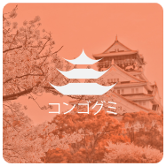По оценкам, в Японии проживает 126 миллионов человек. С 2011 года население Японии заметно сокращается в основном из-за низкой рождаемости — некоторые говорят, что это связано с дорогим уходом за детьми и трудностями с поиском хорошо оплачиваемой работы.
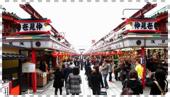Уступая только Гонконгу, ожидаемая продолжительность жизни в Японии составляет 84 года, что на 3 года выше, чем в Соединенном Королевстве.
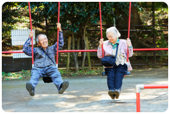С 5 миллионами торговых автоматов Япония имеет самую высокую плотность в мире. Батарейки, рамен, саке, зонтики. цветы - вы называете это, и торговые автоматы, вероятно, продают его.
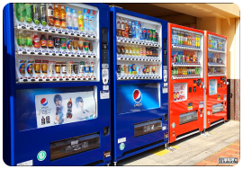Если вы проверите свою молнию, скорее всего, на ней будет написано YKK, что означает Yoshida Kogyo Kabushikikaisha. Этот производитель , основанный в Токио в 1934 году, ежегодно производит 7 миллиардов молний.
Почему дыни в Японии такие дорогие? Эти драгоценные фрукты играют большую роль в национальной культуре дарения подарков: самураи предлагали сёгуну мандарины или дыни в знак признательности. В настоящее время фермеры тщательно ухаживают за этими фруктами вручную, что добавляет им привлекательности. Корончатые дыни являются одним из самых известных сортов и могут стоить более 200 долларов каждая.
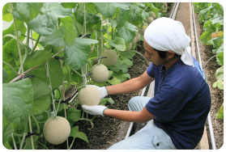Кофе, известный как Blue Mountain, выращенный в одноименном регионе Ямайки, пользуется большим спросом. Этот изысканный напиток, выращенный только на небольших семейных плантациях на высоте более 7000 футов, может похвастаться мягким вкусом и отсутствием горечи, присущей большинству сортов кофе.
Рыбный рынок Цукидзи в Токио был крупнейшим оптовым рынком рыбы и морепродуктов в мире, известным своими аукционами тунца. В 2018 году часть его переехала на новый сайт в Тойосу, где он вновь открылся как рынок Тойосу.
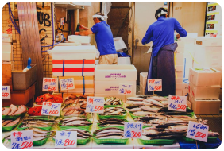Басаси — популярное региональное японское блюдо, состоящее из ломтиков сырой конины с имбирем и луком.
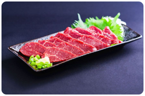Подъезды японских домов, называемые гэнкан, сигнализируют, где следует разуваться, с помощью фальшполов. Нижняя область указывает, где вы должны снять обувь, а приподнятая верхняя часть, часто с другим типом пола, считается внутренним жилым пространством.
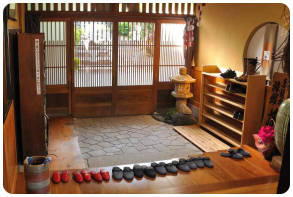Называемые тайкомоти и иногда известные как хоукан , гейши-мужчины были своего рода шутами. Только через 25 лет после их славных дней женщины, известные тогда как гейко — «ребенок искусства», превосходили численностью работающих тайкомоти. Затем Гейко превратилась в гейшу, «человека искусства», как мы ее знаем сегодня.
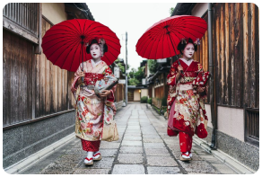Наоборот, громкое чавканье в Японии считается свидетельством того, что вы наслаждаетесь едой. Также говорят, что он придает вкус лапше.
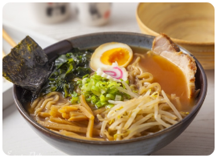Провозглашенная столицей одиночных обедов в мире, сокращение населения Японии в сочетании с увеличением числа домохозяйств, состоящих из одного человека, означало, что запрос столика на одного человека стал нормой.
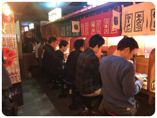Эта холмистая местность включает в себя более 100 действующих вулканов, что составляет примерно 10% всех действующих вулканов в мире — ландшафт идеально подходит для катания на лыжах и прогулок.
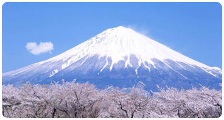Частота землетрясений обусловлена расположением страны поперек трех тектонических плит, называемых «Тихоокеанским огненным кольцом».
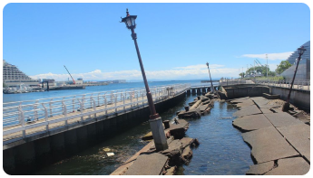